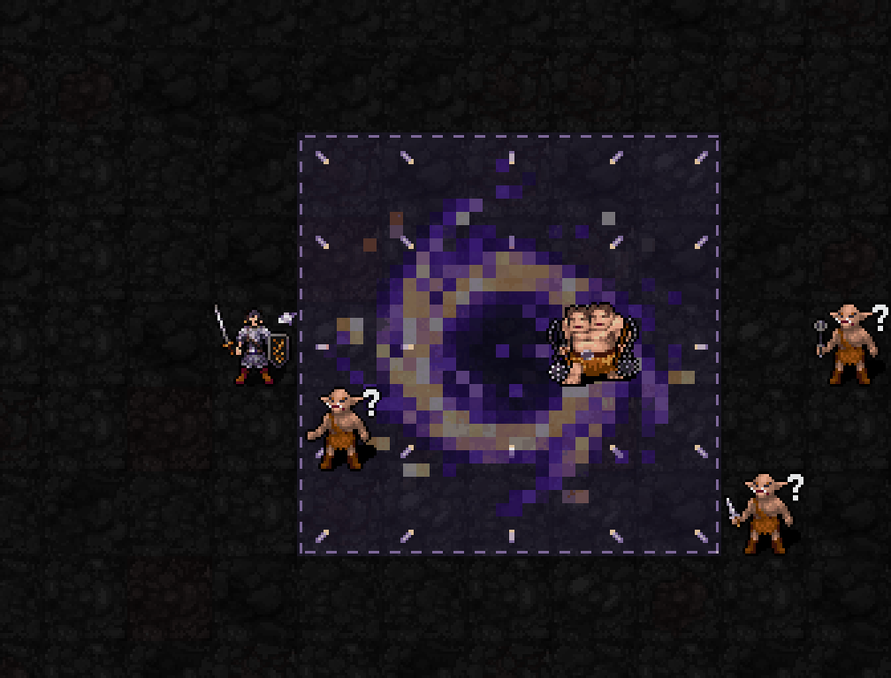
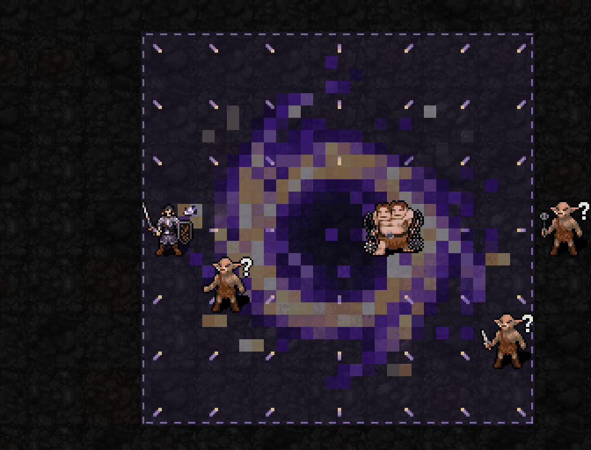

예정 해금:신앙120 / 최소 기도술 제한 없음
예정 비용:MP7·신앙12·1턴. 별도 기폭은 추가 MP·신앙0, 행동1턴

3성에서 승인한 반투명 중력 문양 유지. 응축할수록 금빛 별이1·2·3개 표시되고 문양이 밝아집니다. 기폭 순간은 다른 별빛 충격파가 중심에서 중앙5×5까지 퍼졌다 사라집니다. 몹은 문양 위에 표시됩니다.

장판은3성의 성장 규칙을 따릅니다. 기폭은 기도술과 무관하게 중앙5×5를 유지하며 바깥쪽 장판은 종료됩니다.
| 항목 | 예정 효과 |
|---|---|
| 설치/강화 | 사거리4의 유효 바닥에 강화 중력장 설치. 기존 장이 있으면 중심 유지한 채 강화 |
| 유지 | 시전 완료 후10+0.2I턴. I12:12.4턴 |
| 중력장 | I0~7:3×3 / I8~15:5×5 / I16이상:7×7. 2턴마다3성과 같은 피해·끌기. 강화 직후 중복 틱 없음 |
| 응축 | MP를 소비한 직접 공격 주문으로 장 안 유효 적에게 실제 피해를 주면+1. 광역·다단히트도 시전당 최대1, 총3중첩. 소환수·독·구름·권능 제외. 기다리기만 해서는 쌓이지 않음 |
| 기폭 | 응축1이상 / 중심과 거리6이내·사선·시야 필요 / 중앙5×5 적에게3d(8+⌊I/3⌋)+6C / AC 한 번 적용 / 생존 적 최대2칸 바깥 밀침 / 자신·아군 제외 |
| I12 피해 | C1:평균25.5 / C2:31.5 / C3:37.5 (AC 적용 전) |
| 종료 | 기폭 또는 자연 만료 시 소멸. 만료는 자동 폭발 없음. 종료 후15턴 재사용 대기 |
이 영상은 실제 SDL 렌더러에 응축·기폭 외형 단계를 준비해 촬영한 시각 초안입니다. 이번 GIF에서 주문이 발사되거나 응축이 실제 주문으로 쌓이는 것은 아니며, 몹의 HP·위치도 변하지 않습니다. 새1·3·5성 캐스터 전투는 아직 미구현, 일반 실행본은su-five01 유지. 새 기폭 문양은 built-in imagegen 생성 도트이며, 응축 별은 기폭 원화의 중심 별을 재사용하며, 바닥 흐름은 native 렌더러 도형입니다. 상태/RNG 보존·범위·앵커·22신/저장 복원 검사 통과.